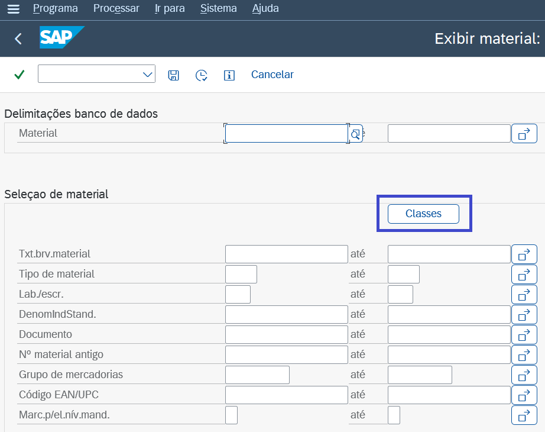
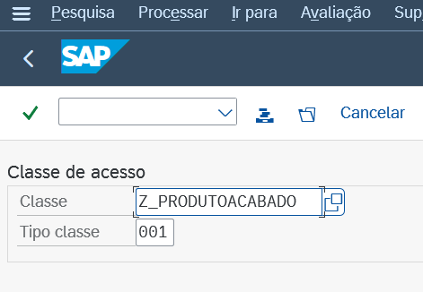
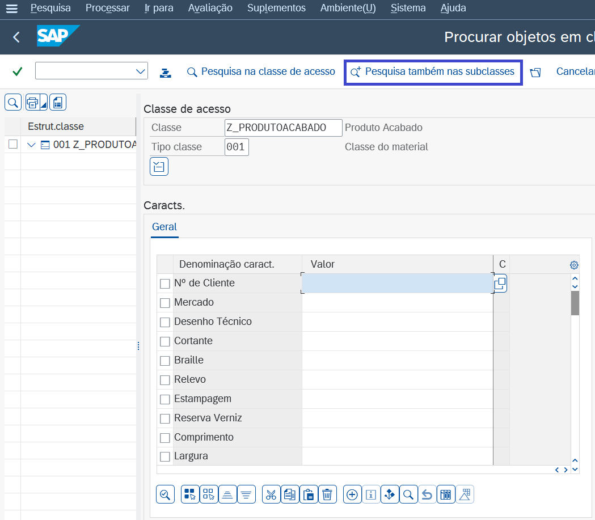
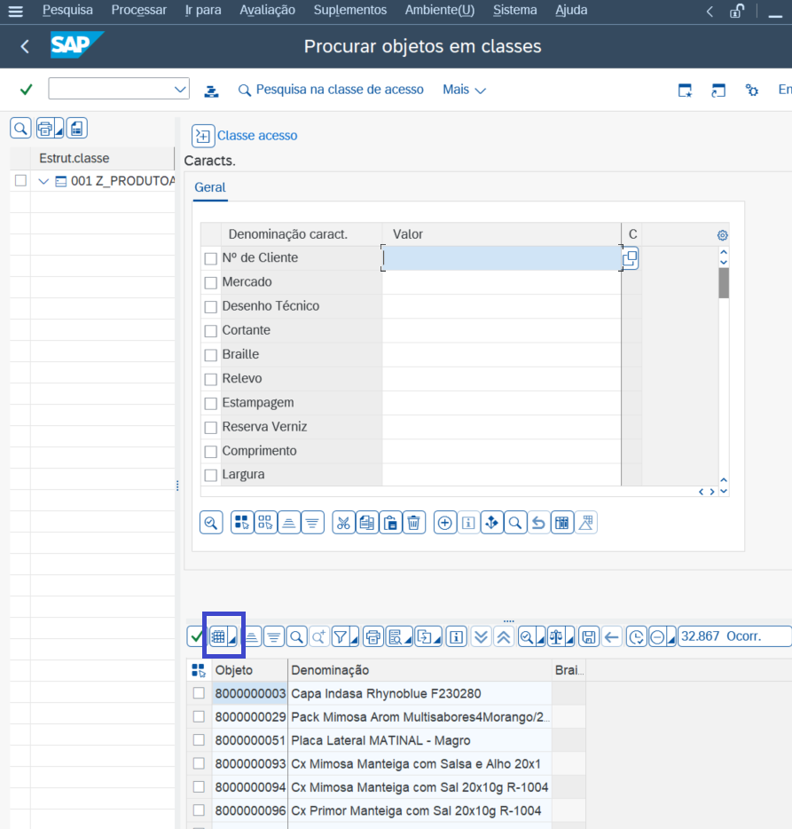
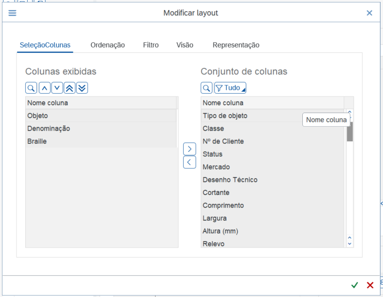
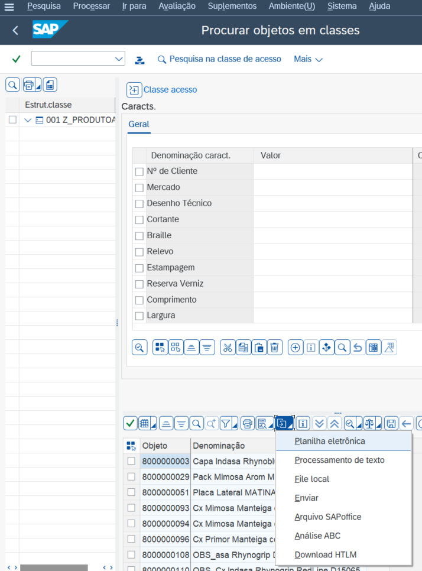

Manter atualizada a relação entre os materiais (MM, códigos 8000…) e os códigos de braille (1300…) usada pela APP Braille PCV. É esta relação que diz à APP qual o PDF de braille aprovado que deve ser comparado com a caixa produzida.
2. Âmbito e responsabilidades
Perfil
Responsabilidade
Supervisor
Extrair o ficheiro do SAP e carregá-lo na APP dentro do prazo. Colocar os PDFs dos brailles novos na pasta 11 - PCV\00 - BRAILLES.
Manager
Definir o prazo máximo entre atualizações (1 a 30 dias) e quem recebe o email de lembrete. Gerir os utilizadores da APP.
Operador
Usar a relação para verificar caixas.
3. Frequência e lembrete automático
O prazo máximo entre atualizações é definido pelo Manager na APP (separador Definições), entre 1 e 30 dias.
Todos os dias de manhã, a APP verifica a data da última atualização. Se o prazo tiver sido ultrapassado, envia um email aos destinatários definidos e repete-o todos os dias até o ficheiro ser carregado.
Enquanto estiver fora do prazo, a APP mostra um aviso aos Supervisores e Managers. Os Operadores não veem este aviso.
Atualizar também, fora do prazo, sempre que um braille novo for associado a um material ou um braille deixar de ser usado.
4. Extração do ficheiro no SAP (IH09)
1
Entrar no SAP e abrir a transação IH09 (Exibir material). Clicar no botão Classes.

Imagem 1 · Botão “Classes” na IH09
2
Em Classe escrever Z_PRODUTOACABADO e em Tipo classe escrever 001. Confirmar.

Imagem 2 · Classe de acesso
3
Na página Procurar objetos em classes, sem preencher nenhuma característica, clicar em Pesquisa também nas subclasses.

Imagem 3 · Pesquisa também nas subclasses
4
Quando a tabela de resultados aparecer, clicar em Modificar layout.

Imagem 4 · Modificar layout
5
Em Colunas exibidas deixar apenas Objeto, Denominação e Braille. Retirar as outras colunas e confirmar.

Imagem 5 · Colunas exibidas
6
Exportar com Exportar › Planilha eletrônica e guardar o ficheiro Excel.

Imagem 6 · Exportar para Planilha eletrônica
Conteúdo obrigatório do ficheiro
Coluna
Exemplo
Notas
Objeto (MM)
8000020749
Obrigatória. Pode vir com zeros à esquerda; a APP remove-os.
Braille
130008199
Obrigatória. Os materiais sem braille ficam em branco e a APP ignora-os. Se um material tiver dois brailles, podem vir na mesma célula ou em linhas separadas.
Denominação
Cx Auchan Atun Claro
Recomendada: aparece na pesquisa e na Biblioteca.
Os títulos das colunas ficam na primeira linha, tal como saem do SAP.
É normal o ficheiro ter todos os produtos acabados, também os que não têm braille.
5. Carregar o ficheiro na APP
1
Abrir a APP Braille PCV e entrar com um utilizador Supervisor ou Manager.
2
Abrir o separador Atualização e, em “Carregar ficheiro do SAP”, escolher ou arrastar o Excel exportado.
3
Confirmar as colunas detetadas: MM = Objeto, código de braille = Braille, descrição = Denominação. Se a APP não as encontrar sozinha, escolhê-las nas listas.
4
Rever a pré-visualização:
número de pares MM – braille, de MM e de códigos de braille, e quantos materiais não têm braille;
Novos MM, MM removidos e Braille alterado em relação à versão anterior. Confirmar que as alterações fazem sentido, sobretudo os brailles alterados;
linhas ignoradas e avisos. Se o ficheiro tiver menos de metade das linhas da relação atual, a APP pede confirmação: normalmente significa que a exportação ficou incompleta.
5
Carregar em Publicar atualização. A data da última atualização passa a ser a de hoje, o aviso desaparece e o lembrete por email para.
6
Confirmar no cartão “Estado da relação SAP” que aparecem 0 dias, o seu nome e o ficheiro carregado.
6. PDFs dos brailles
Os PDFs são atualizados automaticamente assim que são colocados na pasta 11 - PCV\00 - BRAILLES. Não é preciso fazer nada na APP.
O nome de cada PDF tem de conter o código de braille 1300…, para a APP o encontrar.
7. Problemas frequentes
Situação
O que fazer
“Não consegui identificar a coluna do MM / do braille”
Escolher as colunas manualmente nas listas. Confirmar que o layout tem as colunas Objeto e Braille (passo 4.5).
Linhas ignoradas
Ver os números das linhas indicados. Se forem materiais válidos, rever a exportação.
“Muito menos linhas do que a relação atual”
Repetir a exportação, confirmando a pesquisa nas subclasses (passo 4.3). Só confirmar se a redução for esperada.
Erro de token ou de permissão ao publicar
Pedir ao Manager para recriar o utilizador. O acesso pode ter expirado.
O email de lembrete continua a chegar
Confirmar que a publicação terminou sem erro e que o cartão de estado mostra 0 dias.
8. Registos
Cada atualização fica registada no repositório de dados da APP: o ficheiro Excel original, a data, o utilizador e as diferenças (novos, removidos e alterados). O histórico das últimas atualizações aparece no separador Atualização.
Elaborado por:
Verificado por:
Aprovado por:
PLM009.CV-Atualização de relação MM-Braille na APP - 26W47Revisão 01